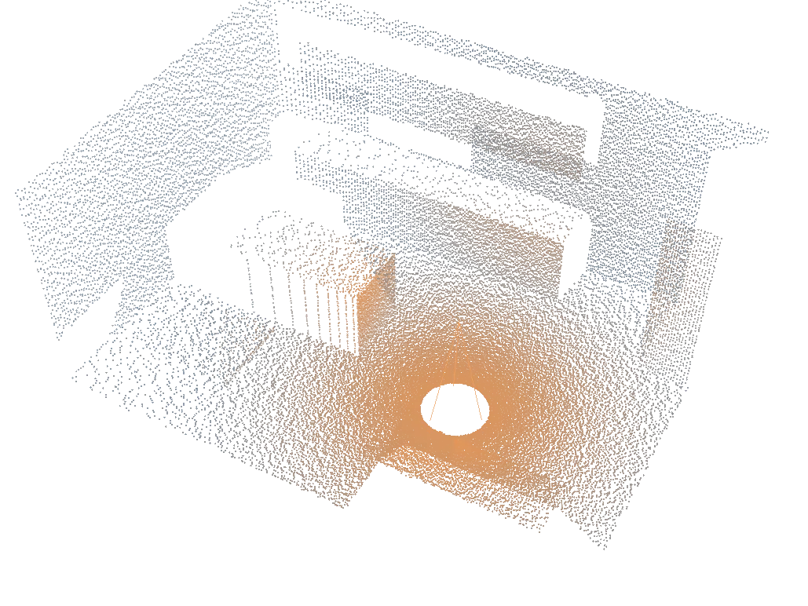

You send
Point clouds and other scanner-derived 3D data.
Geomagic Design X reverse engineering
We turn scans of buildings and walls into 3D solid models, and measure interiors on site with a Leica scanner in Bulgaria.
Illustrative scene, not a client project.
This is our main work. You send measured geometry, and we reconstruct it as a usable 3D solid model rather than a raw point cloud.
Point clouds and other scanner-derived 3D data.
3D solid geometry reconstructed in Geomagic Design X, then checked before handover.
The native Geomagic Design X project file.
Any other export format is agreed for the specific project before work starts.

A separate service for interior and furniture projects in Bulgaria. We travel from Stara Zagora and capture the real geometry of the space.
Modeling jobs start from scan data captured by someone else. Measurement jobs start with a site visit. Neither one requires the other.
Snapir Design BG is a technical design and reverse-engineering company. We focus on turning measured geometry into useful digital engineering models.
Our main international partner is Snapir in Israel, which sends us scan projects for modeling in Geomagic Design X.
An established Israeli manufacturer of aluminum gates, fences, banisters and architectural metalwork for private, commercial and public construction. Precise measurements are the foundation of every product they deliver.
Architectural metalwork and aluminum construction
An interior design and furniture business operating in Bulgaria and Turkey. Once a design and quotation are approved, we measure the real space on site with a Leica laser scanner.
Interior design and furniture
We work with manufacturers, construction firms and engineering studios. Whether you need one project or an ongoing partnership, tell us what you are building.
Tell us which service you need and what the project involves.
Thank you. We will reply to the email address you gave us.